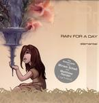

| Artist: | Rain for a Day |
| Title: | Elemental |
| Label: | Point Music |
| Length(s): | 60 minutes |
| Year(s) of release: | 2004 |
| Month of review: | [01/2005] |
| 1) | Frailty | 2.54 |
| 2) | Tonight | 6.43 |
| 3) | Waves | 5.53 |
| 4) | So Real | 8.17 |
| 5) | New Year's Eve | 2.39 |
| 6) | Like Sharks... | 4.59 |
| 7) | Poetry's Crime | 4.12 |
| 8) | Add It Up | 3.48 |
| 9) | La Sagrada | 3.49 |
| 10) | Elemental | 9.25 |
| 11) | I Wish | 7.20 |
Tonight opens fragile, Schell's voice in the high reaches. It is less directly melodic, more sketchy, atmospheric. The vocals in the chorus are stronger, more expressive in a way. This longer track takes its time to work out the theme and build some other stuff around it, and in doing so ends up quite different from its precedessor.
Waves is closer to Frailty, making the memory of Jewel resurface. So Real opens on the poppy side too, but due to the husky vocals it does have a different feel. This increases as it starts working into a climax, from that gliding gently into a bridge featuring piano and Spanish guitars setting us up for a finale. The gusto of Schell's vocals on this finale sets it apart.
New Year's Eve is melancholic with simple vocals and cello. This makes for a nice break. After the more open Like Sharks... the melancholy is reinstalled by Poetry's Crime.
Add It Up strongly reminds me of early All About Eve material, both in Schell's voice as in the structure of the track. Though completely unoriginal the track does compete with the best of the example's material.
La Sagrada has that more introspective feel, bringing up a grave sounding intermezzo of bubbling water overlaid with violins.
Title track Elemental starts out more on the poppy side, but does have the room for adding in some extra effects, such as the crossed double vocals with a sort of hissy, husky feel that reminds me of T'Pau's Carol Decker (especially the Heart And Soul track). After an intermezzo Schell takes on the track again with her clear vocals, by now having obliterated the memory of the track's poppy start.